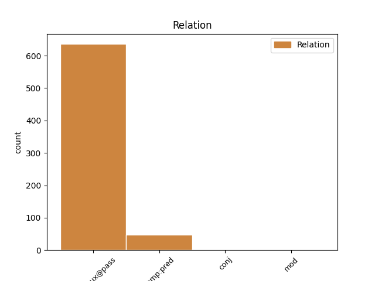
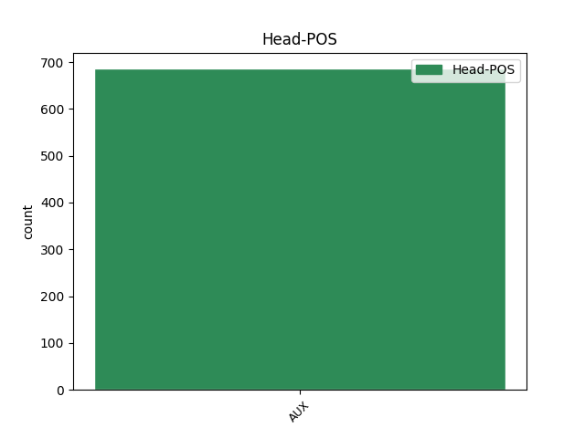
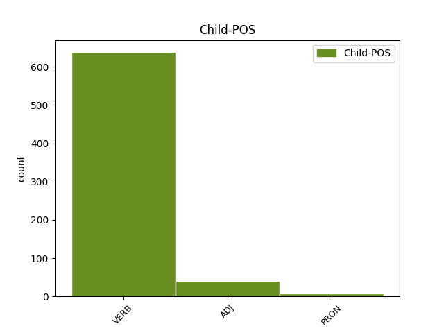

Distribution of features within this leaf



Agreement Rules sorted by frequency.
When the head token is AUX and the dependent token is VERB.
1 Le _ _ _ _ 0 _ _ _
2 comté _ _ _ _ 0 _ _ _
3 a _ _ _ _ 0 _ _ _
4 été être AUX _ Gender=Masc|Number=Sing|Tense=Past|VerbForm=Part 0 _ _ _
5 fondé fonder VERB _ Gender=Masc|Number=Sing|Tense=Past|VerbForm=Part 4 comp:aux@pass _ _
6 en _ _ _ _ 0 _ _ _
7 1844 _ _ _ _ 0 _ _ _
8 et _ _ _ _ 0 _ _ _
9 doit _ _ _ _ 0 _ _ _
10 son _ _ _ _ 0 _ _ _
11 nom _ _ _ _ 0 _ _ _
12 à _ _ _ _ 0 _ _ _
13 Francis _ _ _ _ 0 _ _ _
14 Marion _ _ _ _ 0 _ _ _
15 , _ _ _ _ 0 _ _ _
16 général _ _ _ _ 0 _ _ _
17 américain _ _ _ _ 0 _ _ _
18 . _ _ _ _ 0 _ _ _
When the head token is AUX and the dependent token is ADJ.
1 Les _ _ _ _ 0 _ _ _
2 revenus _ _ _ _ 0 _ _ _
3 générés _ _ _ _ 0 _ _ _
4 par _ _ _ _ 0 _ _ _
5 le _ _ _ _ 0 _ _ _
6 film _ _ _ _ 0 _ _ _
7 , _ _ _ _ 0 _ _ _
8 lors _ _ _ _ 0 _ _ _
9 de _ _ _ _ 0 _ _ _
10 sa _ _ _ _ 0 _ _ _
11 sortie _ _ _ _ 0 _ _ _
12 ou _ _ _ _ 0 _ _ _
13 de _ _ _ _ 0 _ _ _
14 ses _ _ _ _ 0 _ _ _
15 ressorties _ _ _ _ 0 _ _ _
16 , _ _ _ _ 0 _ _ _
17 n' _ _ _ _ 0 _ _ _
18 ont _ _ _ _ 0 _ _ _
19 jamais _ _ _ _ 0 _ _ _
20 été être AUX _ Gender=Masc|Number=Sing|Tense=Past|VerbForm=Part 0 _ _ _
21 aussi _ _ _ _ 0 _ _ _
22 importants important ADJ _ Gender=Masc|Number=Plur 20 comp:pred _ _
23 que _ _ _ _ 0 _ _ _
24 ceux _ _ _ _ 0 _ _ _
25 de _ _ _ _ 0 _ _ _
26 les _ _ _ _ 0 _ _ _
27 autres _ _ _ _ 0 _ _ _
28 productions _ _ _ _ 0 _ _ _
29 de _ _ _ _ 0 _ _ _
30 le _ _ _ _ 0 _ _ _
31 studio _ _ _ _ 0 _ _ _
32 . _ _ _ _ 0 _ _ _
When the head token is AUX and the dependent token is PRON.
1 Quels quel PRON _ Gender=Masc|Number=Plur 4 comp:pred _ _
2 en _ _ _ _ 0 _ _ _
3 ont _ _ _ _ 0 _ _ _
4 été être AUX _ Gender=Masc|Number=Sing|Tense=Past|VerbForm=Part 0 _ _ _
5 les _ _ _ _ 0 _ _ _
6 progrès _ _ _ _ 0 _ _ _
7 jusqu' _ _ _ _ 0 _ _ _
8 à _ _ _ _ 0 _ _ _
9 la _ _ _ _ 0 _ _ _
10 mort _ _ _ _ 0 _ _ _
11 de _ _ _ _ 0 _ _ _
12 Jules _ _ _ _ 0 _ _ _
13 César _ _ _ _ 0 _ _ _
14 ? _ _ _ _ 0 _ _ _
Disagree Examples:
1 Bien _ _ _ _ 0 _ _ _
2 que _ _ _ _ 0 _ _ _
3 cette _ _ _ _ 0 _ _ _
4 entreprise _ _ _ _ 0 _ _ _
5 ait _ _ _ _ 0 _ _ _
6 été être AUX _ Gender=Masc|Number=Sing|Tense=Past|VerbForm=Part 0 _ _ _
7 considérée considérer VERB _ Gender=Fem|Number=Sing|Tense=Past|VerbForm=Part 6 comp:aux@pass _ _
8 comme _ _ _ _ 0 _ _ _
9 sans _ _ _ _ 0 _ _ _
10 espoir _ _ _ _ 0 _ _ _
11 , _ _ _ _ 0 _ _ _
12 le _ _ _ _ 0 _ _ _
13 syndicat _ _ _ _ 0 _ _ _
14 persévéra _ _ _ _ 0 _ _ _
15 , _ _ _ _ 0 _ _ _
16 même _ _ _ _ 0 _ _ _
17 s' _ _ _ _ 0 _ _ _
18 il _ _ _ _ 0 _ _ _
19 ne _ _ _ _ 0 _ _ _
20 pouvait _ _ _ _ 0 _ _ _
21 payer _ _ _ _ 0 _ _ _
22 que _ _ _ _ 0 _ _ _
23 huit _ _ _ _ 0 _ _ _
24 jours _ _ _ _ 0 _ _ _
25 de _ _ _ _ 0 _ _ _
26 recherches _ _ _ _ 0 _ _ _
27 . _ _ _ _ 0 _ _ _
1 Cette _ _ _ _ 0 _ _ _
2 tour _ _ _ _ 0 _ _ _
3 de _ _ _ _ 0 _ _ _
4 48 _ _ _ _ 0 _ _ _
5 m _ _ _ _ 0 _ _ _
6 a _ _ _ _ 0 _ _ _
7 été être AUX _ Gender=Masc|Number=Sing|Tense=Past|VerbForm=Part 0 _ _ _
8 achevée achever VERB _ Gender=Fem|Number=Sing|Tense=Past|VerbForm=Part 7 comp:aux@pass _ _
9 en _ _ _ _ 0 _ _ _
10 1962 _ _ _ _ 0 _ _ _
11 . _ _ _ _ 0 _ _ _
1 En _ _ _ _ 0 _ _ _
2 1971 _ _ _ _ 0 _ _ _
3 , _ _ _ _ 0 _ _ _
4 elle _ _ _ _ 0 _ _ _
5 avait _ _ _ _ 0 _ _ _
6 été être AUX _ Gender=Masc|Number=Sing|Tense=Past|VerbForm=Part 0 _ _ _
7 lauréate _ _ _ _ 0 _ _ _
8 de _ _ _ _ 0 _ _ _
9 le _ _ _ _ 0 _ _ _
10 concours _ _ _ _ 0 _ _ _
11 musical _ _ _ _ 0 _ _ _
12 international _ _ _ _ 0 _ _ _
13 Reine _ _ _ _ 0 _ _ _
14 Élisabeth _ _ _ _ 0 _ _ _
15 de _ _ _ _ 0 _ _ _
16 Belgique _ _ _ _ 0 _ _ _
17 , _ _ _ _ 0 _ _ _
18 classée classer VERB _ Gender=Fem|Number=Sing|Tense=Past|VerbForm=Part 6 conj _ _
19 cinquième _ _ _ _ 0 _ _ _
20 lors _ _ _ _ 0 _ _ _
21 de _ _ _ _ 0 _ _ _
22 l' _ _ _ _ 0 _ _ _
23 épreuve _ _ _ _ 0 _ _ _
24 finale _ _ _ _ 0 _ _ _
25 . _ _ _ _ 0 _ _ _
1 La _ _ _ _ 0 _ _ _
2 commission _ _ _ _ 0 _ _ _
3 a _ _ _ _ 0 _ _ _
4 été être AUX _ Gender=Masc|Number=Sing|Tense=Past|VerbForm=Part 0 _ _ _
5 organisée organiser VERB _ Gender=Fem|Number=Sing|Tense=Past|VerbForm=Part 4 comp:aux@pass _ _
6 autour _ _ _ _ 0 _ _ _
7 de _ _ _ _ 0 _ _ _
8 besoins _ _ _ _ 0 _ _ _
9 clairs _ _ _ _ 0 _ _ _
10 avec _ _ _ _ 0 _ _ _
11 les _ _ _ _ 0 _ _ _
12 sections _ _ _ _ 0 _ _ _
13 de _ _ _ _ 0 _ _ _
14 les _ _ _ _ 0 _ _ _
15 Légalisations _ _ _ _ 0 _ _ _
16 , _ _ _ _ 0 _ _ _
17 de _ _ _ _ 0 _ _ _
18 l' _ _ _ _ 0 _ _ _
19 Habitat _ _ _ _ 0 _ _ _
20 , _ _ _ _ 0 _ _ _
21 de _ _ _ _ 0 _ _ _
22 les _ _ _ _ 0 _ _ _
23 Finances _ _ _ _ 0 _ _ _
24 , _ _ _ _ 0 _ _ _
25 de _ _ _ _ 0 _ _ _
26 l' _ _ _ _ 0 _ _ _
27 Enfance _ _ _ _ 0 _ _ _
28 , _ _ _ _ 0 _ _ _
29 Médicale _ _ _ _ 0 _ _ _
30 , _ _ _ _ 0 _ _ _
31 Vestimentaire _ _ _ _ 0 _ _ _
32 , _ _ _ _ 0 _ _ _
33 de _ _ _ _ 0 _ _ _
34 la _ _ _ _ 0 _ _ _
35 Propagande _ _ _ _ 0 _ _ _
36 et _ _ _ _ 0 _ _ _
37 de _ _ _ _ 0 _ _ _
38 le _ _ _ _ 0 _ _ _
39 Combat _ _ _ _ 0 _ _ _
40 contre _ _ _ _ 0 _ _ _
41 la _ _ _ _ 0 _ _ _
42 délation _ _ _ _ 0 _ _ _
43 . _ _ _ _ 0 _ _ _
1 Elle _ _ _ _ 0 _ _ _
2 a _ _ _ _ 0 _ _ _
3 été être AUX _ Gender=Masc|Number=Sing|Tense=Past|VerbForm=Part 0 _ _ _
4 découverte découvrir VERB _ Gender=Fem|Number=Sing|Tense=Past|VerbForm=Part 3 comp:aux@pass _ _
5 à _ _ _ _ 0 _ _ _
6 Mandouri _ _ _ _ 0 _ _ _